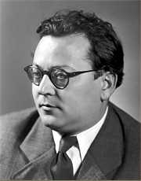

Kainar: Interiér
|
JOSEF KAINAR
* 29. 6. 1917 (Přerov)
† 16. 11. 1971 (Dobříš)
Josef Kainar propojil ve své tvorbě literaturu s hudbou. Nejvíce ho ovlivnila poetika Skupiny 42, jejímž byl členem.
Studoval na gymnáziu v Přerově, Olomouci a Hlučíně, ale dvakrát propadl, a dokonce se pokusil o sebevraždu. Po maturitě začal studovat češtinu a francouzštinu na Univerzitě Karlově, ale po uzavření českých vysokých škol nacisty pracoval na nádraží jako železniční pochůzkář, dělník na pile nebo kytarista. Po válce se už na univerzitu nevrátil. Od roku 1947 se živil literaturou, stal se čelným představitelem oficiální kultury, psal budovatelskou poezii a často pobýval na zámku spisovatelů v Dobříši. Krátce před smrtí byl předsedou normalizačního Svazu českých spisovatelů.
|

Josef Kainar
|
Kainar a Skupina 42
Kainar vstoupil do literatury až v době okupace, kdy přispěl do Jarního almanachu básnického z roku 1940. Ve stejném roce vychází jeho básnická prvotina Příběhy a menší básně. Brzy se zapojuje do činnosti Skupiny 42, ale jeho verše z tohoto období mohly vyjít až v poválečných sbírkách Osudy a Nové mýty.
|
Josef Kainar: Nové mýty
Vrcholem Kainarovy tvorby založené na poetice Skupiny 42 byla kniha Nové mýty. Některé básně z této sbírky byly později zhudebněny.
|

Smetana: Osamělé domy
Kdo zhudebnil báseň Stříhali dohola malého chlapečka?
Jak se liší text stejnojmenné písně od Kainarovy básně?
Které Kainarovy básně byly zhudebněny?
Kdo je nazpíval?
|
Kainar a budovatelská poezie
Po válce se stal Kainar redaktorem komunistického deníku Rovnost a začal psát konjunkturální budovatelskou poezii, kterou shrnul do sbírek Veliká láska a Český sen.
Spolupracoval rovněž s Divadlem satiry, pro které napsal hru Ubu se vrací aneb Dršťky nebudou. Několika výstupy a písňovými texty přispěl i do kolektivní hry Cirkus plechový.
|
Josef Kainar: Veliká láska a Český sen
Kainarova budovatelská poezie si zachovala jisté umělecké kvality. Na rozdíl od dobových veršovánek skládal své básně i volným veršem. Výrazové prostředky ale velmi zjednodušil a samozřejmě přizpůsobil témata svých děl dobovým požadavkům angažovanosti.
|
Jak se ti líbí Kainarova báseň Schůze před průvodem?
Tvorbu kterého básníka ti připomíná? Čím?
Kdo je autorem postavy otce Ubu?

Smetana: Konečná stanice
|
Kainar a 60. léta
Na přelomu 50. a 60. let přestal psát Kainar budovatelskou poezii a vrátil se k východiskům své tvorby i poetice Skupiny 42, o čemž svědčí jeho sbírky Člověka hořce mám rád, Lazar a píseň nebo Moje blues.
|
Josef Kainar: Lazar a píseň
Vrcholem Kainarovy básnické tvorby je sbírka Lazar a píseň.
|
Jak na tebe působí nespisovná čeština v Kainarových básních?
Proč ji Kainar použil?
O čem jsou tyto Kainarovy básně?
Najdeš v nich rysy poetiky Skupiny 42?
Jaké sny se zdají psům a jaké kočkám?
|
Kainar a hudba
Kainar se od mládí věnoval jazzu a hrál v amatérských i profesionálních kapelách na kytaru a housle. Psal české texty na šlágry v angličtině – Miss Otis lituje..., hudební skupině Flamengo otextoval album Kuře v hodinkách a sám složil několik písní. Okrajově se věnoval také ohlasové poezii, která má k hudbě velice blízko.
Hudeček: Skládka ve staré cihelně
|
Josef Kainar: Miss Otis lituje...
Kniha Miss Otis lituje... obsahuje Kainarovy „překlady“ písňových textů. Básník se nedržel obsahu originálních jazzových šlágrů, ale vymýšlel si zcela nové texty, které by se daly zpívat na jejich melodie.
Kainar: Blues o mrtvém vrabci
|

Gross: Hot-jazz sextet
Znáš uvedené písně? Umíš je zazpívat?
Přelož nějaký písňový text do češtiny.
Co musíš udělat, aby se dal zpívat na původní melodii?
Zkus napsat písňový text na hotovou melodii.
Vyber si nějakou báseň a zhudebni ji.
Dokážeš složit celou písničku?
|
Kainarova blues

Hudeček: Noční chodec II
|
Josef Kainar: Moje blues
Kainar často nazýval své básně slovem blues převzatým z hudební oblasti, nemuselo ani jít o písňové texty. Věnoval jim celou básnickou sbírku Moje blues. I tyto texty byly dodatečně zhudebněny.
|
Lhoták: Stroje mávající křídly
Čím se vyznačuje blues?
Charakterizuj tento hudební styl.
Jak vznikl? Kdo se mu věnuje?
|
Kainarova tvorba pro děti
Kainar se zabýval skládáním veršů pro děti, které vyšly ve sbírce Říkadla (Nevídáno – neslýcháno). Napsal také hru Zlatovláska. Pohádkový námět zpracovává jeho komedie Nebožtík Nasredin.
Kdo byl Nasredin?
|
Josef Kainar: Nevídáno – neslýcháno
Dětem byla určena Kainarova básnická sbírka Nevídáno – neslýcháno.
|
Lhoták: Jak se člověk naučil létat
Jak se ti líbí Kainarovy říkanky?
|
Internetové stránky
Kocánová: Písňové texty Josefa Kainara
Tipy
Kainar: Obelisk, hudební nahrávka s 22 písněmi
Flamengo: Kuře v hodinkách, hudební nahrávka s Kainarovými texty
Exkurze
Dobříš, bývalý zámek spisovatelů
Dobříš, bývalý zámek spisovatelů
|
Doporučená četba
Blahynka Milan, Člověk Kainar, Praha 1983
Kainar, Josef: Básně a blues, Československý spisovatel, Praha 1978
Kainar, J.: Bláznův kabát, Praha 1972
Kainar, J.: Bledej gentleman, Básně – písně – blues, Labyrint, Praha 2002
Kainar, J.: Čas nečas, Praha 1984
Kainar, J.: Člověka hořce mám rád, Praha 1959
Kainar, J.: Lazar a píseň. Praha 1960
Kainar, J.: Miss Otis lituje, Praha 1969
Kainar, J.: Moje blues, Praha 1966
Kainar, J.: Nikdy nejsem sám, Práce, Praha 1982
Kainar, J.: Stará a nová blues, Československý spisovatel, Praha 1984
Kainar, J.: Synkopy, Odeon, Praha 2003
Kainar, J.: Ubu se vrací, IN: Divadelní revue 1990
Kainar, J.: Vybrané spisy (3 svazky), Československý spisovatel, Praha 1990
Merta, V.: Zpívaná poezie, Praha 1990
S mikrofonem za trochejem, IN: Tvar 15/2002 (Kainarovy zhudebněné básně)
|
Vypracuj písemný referát o některé z uvedených knih.

Hák: Ve dvoře
|